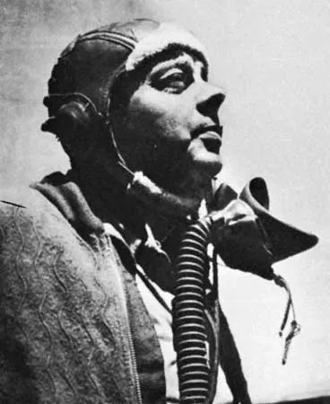

Biblia: La biblia es el libro más vendido en la historia, cuenta con 2560 páginas y 76 historias dentro de ella. En la actualidad mucha gente vende biblias a su estilo, pero la primera biblia la creó Moisés en antiguo Griego, aunque según al que le preguntes te puede decir otra persona. La biblia cuenta con 2 partes: el nuevo testamento y el antiguo testamento. La biblia está hecha para cristianos (antigua y nuevo testamento) y para judíos (antiguo testamento). La idea original de la biblia era para narrar la historia de Jesús y dios según la perspectiva de Moisés.
Don Quijote de la Mancha: Don Quijote de la Mancha es el libro más vendido de la literatura española, se trata de las aventuras de un señor viejo el cual quiere ser caballero. Actualmente en todas las partes del mundo puedes conseguir este libro, y el creador de la biblia es Miguel de Cervantes. Como todo buen caballero Don Quijote tenía un escudero el cual lo acompañaba en todas sus aventuras. Don Quijote de la Mancha también es el libro más vendido actualmente en España, inclusive tiene una estatua en Madrid, España.
El principito: El principito es el libro más famoso para los niños chiquitos también es el más vendido para ellos, el libro consiste en que un niño está arreglando su avión en el desierto y llega un alien. Este libro ha sido tan famoso que incluso le han hecho películas. Y el genio que creó este libro se llama Antoine de Saint-Exupéry. En mi opinión es uno de los libros más entretenidos actualmente, también creo que el principito podría ser más entretenido y divertido si no lo hubiese hecho específicamente solo para los niños.
Moisés es más conocido por la historia del libro bíblico del Éxodo y del Corán como el legislador que se encontró con Dios cara a cara en el monte Sinaí para recibir los Diez Mandamientos tras sacar a su pueblo, los hebreos, de la esclavitud en Egipto y llevarlo a la "tierra prometida" de Canaán
Antoine de Saint-Exupéry, autor de renombre mundial de El Principito y otras importantes obras literarias, también fue un pionero de la aviación que perdió la vida en circunstancias misteriosas durante la Segunda Guerra Mundial.
Miguel de Cervantes Saavedra, poeta y novelista español, autor de la novela El ingenioso Don Quijote de la Mancha, considerada como la primera novela moderna de la literatura universal, Miguel de Cervantes Saavedra tuvo una vida azarosa de la que poco se sabe con seguridad.